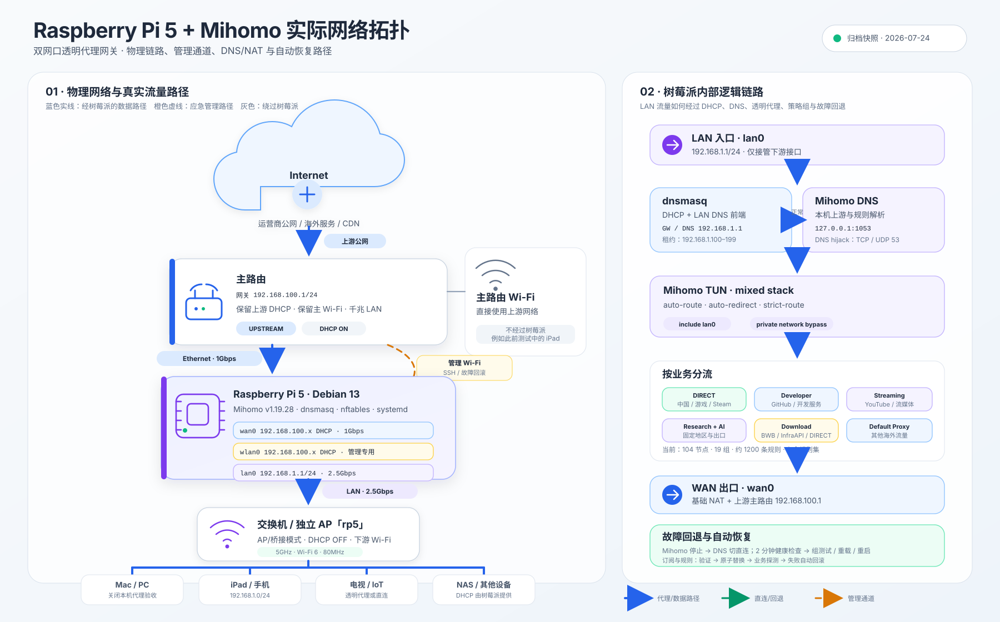

Raspberry Pi 5 + Mihomo
历史网络拓扑（2026-07）
历史档案：本页图示不代表当前网段、链路速率和管理方式。请以 2026-10-11 当前方案 为准。
本页记录 2026-07-24 的真实部署结构。图中同时呈现物理链路、树莓派内部逻辑路径、管理回退通道，以及不经过树莓派的主路由 Wi-Fi。

路径说明
- 主路由保留上游 DHCP 和主 Wi-Fi。
wan0从主路由获取192.168.100.x地址。lan0固定为192.168.1.1/24，向下游提供 DHCP、DNS 和网关。- AP「rp5」工作在桥接/AP 模式，不运行第二个 DHCP。
wlan0只用于 SSH 和故障回滚，不作为透明代理入口。
图例
代理或正常数据路径
直连与故障回退路径
应急管理 Wi-Fi
绕过树莓派的主路由 Wi-Fi
动态地址说明：WAN 和管理 Wi-Fi 地址由主路由 DHCP 分配，会随租约变化；永久稳定的下游网关地址是 192.168.1.1。